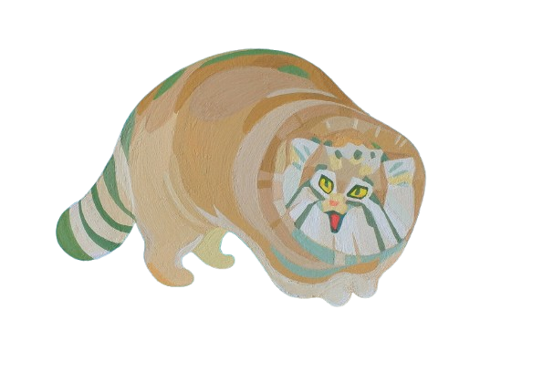

hi. my name is scott 🎧 . i'm a freshman bme student at ut austin. i use he him his + other.
if you've been on this site before, you might be like oh my god scott everything is GONE. don't you worry. everything is okay. i just wanted to start from scratch hehe. do not worry my headphonians. we are slowly adding and becoming awesome! :3
